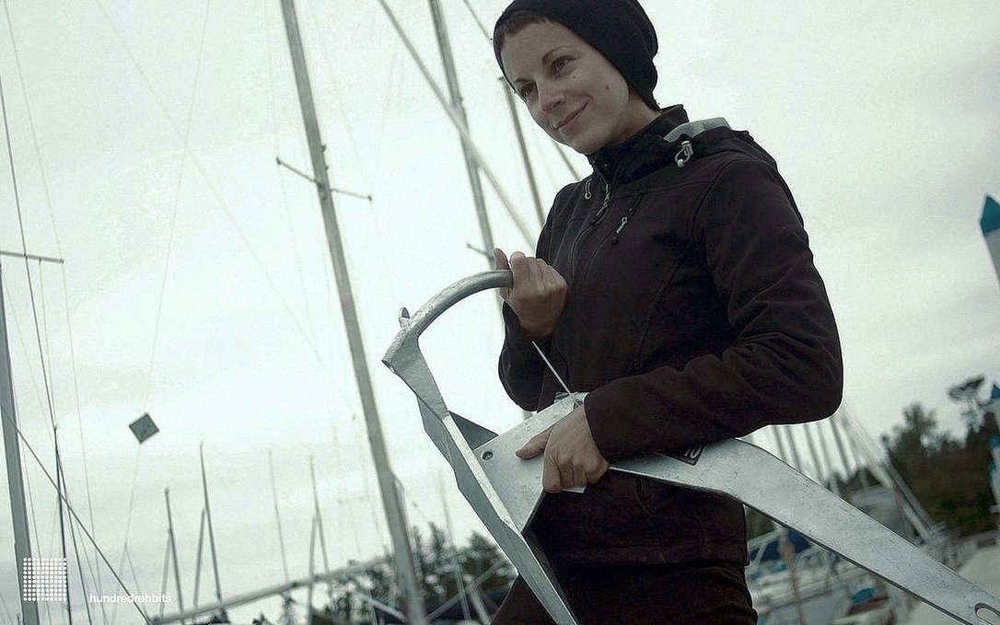
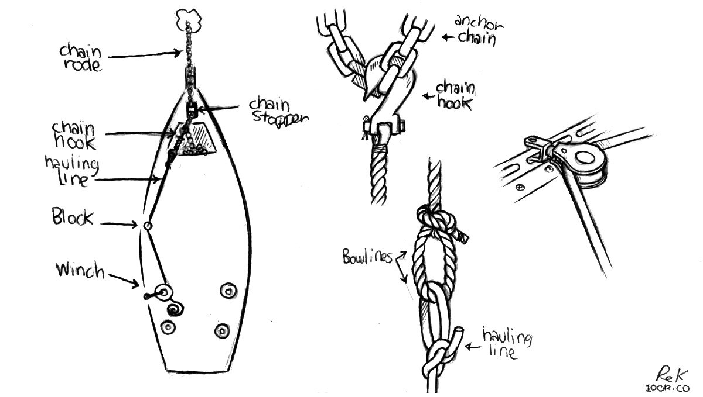
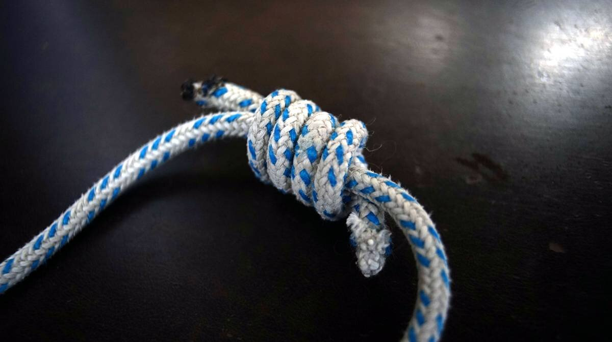
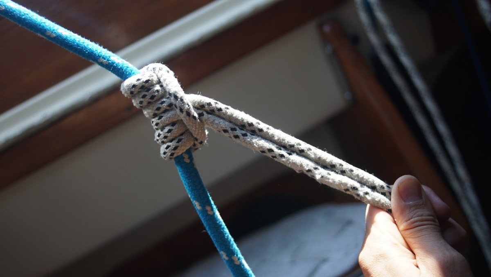
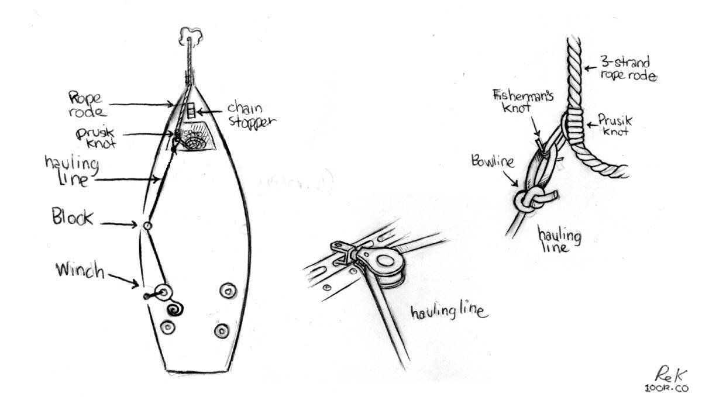

anchoring setup
We carry 2 anchors onboard. We used to carry 3, but gave our Bruce 10 kg (22 lb) to a good friend.
We anchor using a snubber to lighten the load on our chain stopper. Our boat doesn't have a windlass, we haul the anchor up by hand. The chain stopper helps catch the chain so it is easier to hoist back up.
Pino's main gear
- Rocna Anchor 15 kg (33 lb)
- 30 m (100 ft) chain 8 mm (5/16 in)
- 103 m (340 ft) 12.7 mm (1/2 in) nylon rode
- Maxwell 8 mm chain stopper
Pino's spare gear
- Rocna Anchor 10 kg (22 lb)
- 12 m (40 ft) galvanized chain 7.9 mm (5/16 in)
- 60 m (200 ft) 12.7 mm (1/2 in) nylon rode
- 30 m (100 ft) chain 8 mm (5/16 in)
- 90 m (300 ft) floating rode
no windlass
We haul the anchor up by hand most times, but when anchored in thick mud or deeper waters we like to lead a line back to the cockpit and to use the above method to haul up the anchor rode and anchor. It is easy to get hurt when there is a lot of mud on the fluke of the anchor.
We can only heave up a short length of chain at a time. When the chain hook is near the block amidships, we engage the chain stopper, loosen the line at the winch, then move the hook forward, then pull some more, and repeat.
If we have a lot of rope rode out in the water, we use a rope loop(made using a double fisherman's knot, see above) and tie it to the 3-strand nylon rode using a prusik knot.
Like with the chain hauling method, our hauling line attaches to the rope loop forward of the boat, and is led back to a cockpit winch. In the drawing below, we use a bowline to tie the hauling line to the rope loop, but we now have the chain hook secured to the end of the hauling line and we just put the chain hook into the loop instead, this way we don't have to put the chain hook back onto the line when we arrived at the chain part of the anchor rode.
When the rode arrives amidship at the block, another rope loop and prusik knot is tied forward on the line to release pressure(this is like engaging the chain stopper), then the prusik knot on the hauling line is now relieved of tension and it is possible to slide it to the front of the boat. When the hauling line is back under tension, we release the second prusik knot and remove the loop from the rope rode.
It's a not a very fast process, but it works. We tested this method while under pressure when we needed to leave Ratz Harbor quickly on June 8th 2024 when the weather turned sour. Note that it is not easy to do in a lot of weather, everything is under a lot of pressure so you must be careful. It is very easy to do under normal conditions, again, it just takes time. Even if you have an electric or manual windlass aboard, consider carrying extra blocks, a chain hook and rope loops as a safety backup. Your cockpit winches are very powerful, you can haul an anchor with one no problem. Motor boats ought to consider installing a winch somewhere aboard in case of windlass failure, a winch is also useful to pull in a line when stern-tying. Learn how to do a prusik too, practice and master it before you need to it under pressure.